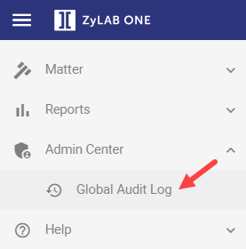
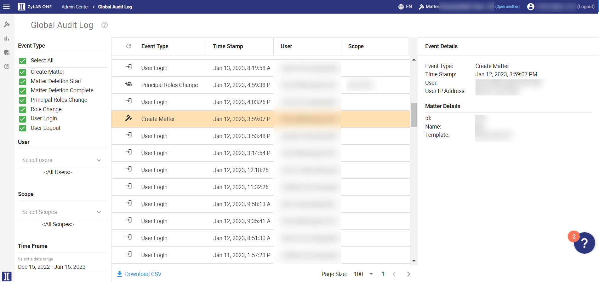
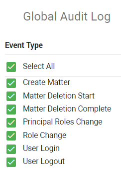
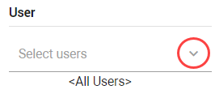
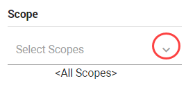
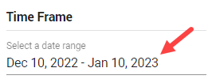
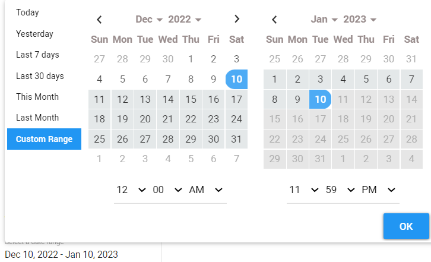
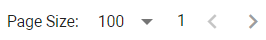
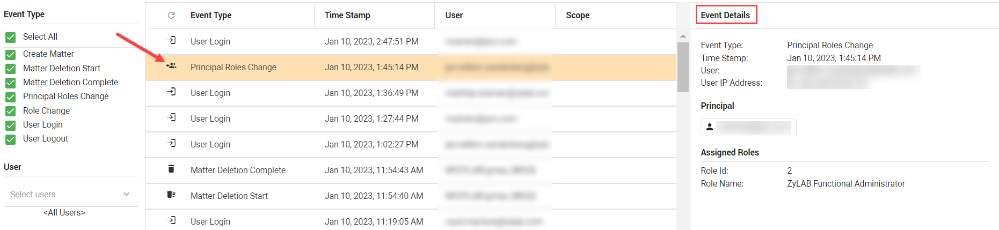
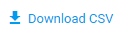

View and Download Global Audit Log
From the left-hand side menubar, select Admin Center > Global Audit Log.

The Global Audit Log overview appears:

By default, all Global Event Types are displayed.

Disable the Select All checkbox to deselect all event types. Select one or more event types by checking the relevant boxes.
Filter the logged events by selecting the user(s), scope(s), and by defining the time frame.
Click Select Users to select one or more users. By default, all users are included. You can filter the list by typing the name of a user in the Filter field.

Click Select Scopes to define the scope(s).

Adjust the Time Frame. Click Select a date range to specify the time frame. Click OK when finished.


Click Refresh in the Event Type column to update the list of logged events.
Adjust the width of the columns. Drag and release column headings.
Reposition the columns. Drag and drop column headings from left to right, and vice versa.
Adjust the Page Size.

Click on a logged event to view its details in the Event Details pane.

Download a CSV-file of the Global Audit Log overview. Click Download CSV in the bottom-left corner.
